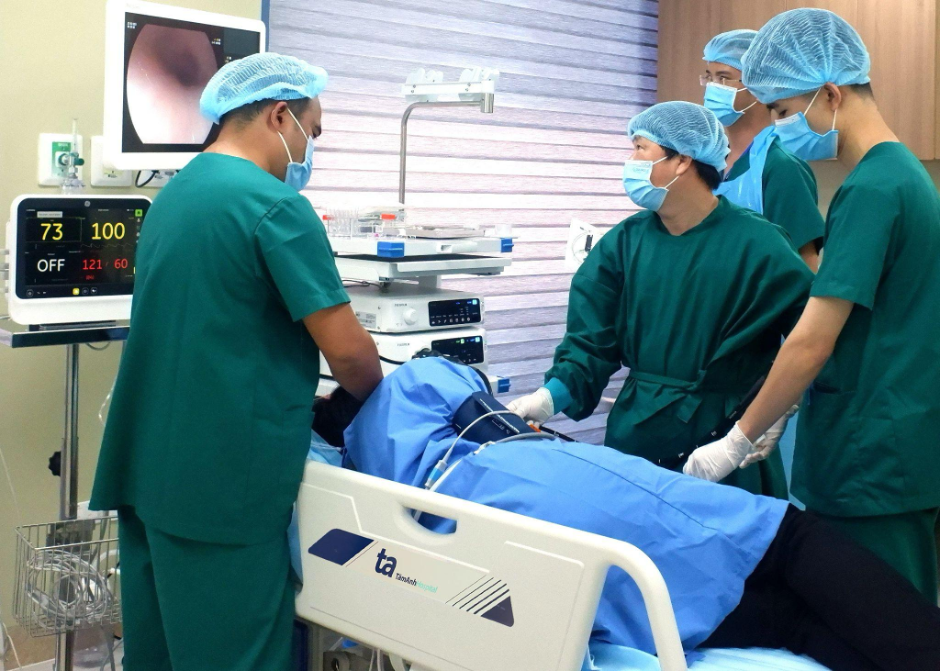

(Vnexpress) - Ung thư thực quản diễn tiến âm thầm, không có triệu chứng điển hình nên thường được phát hiện ở giai đoạn muộn, ảnh hưởng hiệu quả điều trị và tiên lượng sống.Thực quản là một phần của ống tiêu hóa, cấu trúc hình ống, dài khoảng 25 cm, rộng khoảng 2,5 cm. Thực quản nằm giữa khí quản (đường thở) và cột sống, chia làm ba đoạn trên, giữa, dưới.
Theo Cơ quan Nghiên cứu Ung thư Quốc tế (Globocan) năm 2020 có hơn 600.000 trường hợp mắc mới ung thư thực quản. Đây là bệnh lý ung thư gây tử vong phổ biến thứ 6 trên thế giới. Tại Việt Nam, ung thư thực quản đứng hàng thứ 9 trong số 10 loại ung thư gây tử vong nhiều nhất, với hơn 3.000 trường hợp tử vong và hơn 3.200 ca mắc mới.
Bệnh gồm hai dạng chính là ung thư biểu mô tế bào gai (tế bào vảy) và ung thư biểu mô tế bào tuyến.
Ung thư biểu mô tế bào gai thường gặp ở đoạn trên và giữa thực quản, phổ biến ở người châu Á, Đông Âu.
Ung thư biểu mô tế bào tuyến xảy ra ở đoạn giữa và dưới thực quản, phổ biến ở người Tây Âu, Bắc Mỹ.
Một số dạng hiếm gặp khác bao gồm ung thư biểu mô tế bào nhỏ, sarcoma, lymphoma...
Triệu chứng ung thư thực quản giai đoạn đầu thường không rõ ràng. Bệnh có thể biểu hiện giống các bệnh lý khác như viêm dạ dày, trào ngược dạ dày - thực quản với các triệu chứng khó tiêu, ợ hơi, ợ chua, nuốt nghẹn, nuốt khó, cảm giác nóng rát sau xương ức... Chỉ khoảng 25% bệnh nhân được chẩn đoán khi ung thư còn ở giai đoạn sớm. Khi bệnh đã tiến triển hoặc di căn, điều trị thường khó khăn, có tiên lượng kém khả quan, ảnh hưởng đến thời gian sống và khả năng phục hồi của người bệnh.
Nguyên nhân chính xác gây ung thư thực quản chưa được xác định rõ. Một số thói quen làm tăng nguy cơ ung thư như sử dụng rượu bia, hút thuốc lá, tiêu thụ nhiều thực phẩm chứa nitrosamin, ăn nhiều đồ dầu mỡ, chiên rán, thói quen ăn trầu cau... Người mắc bệnh trào ngược dạ dày - thực quản, barrett thực quản, béo phì, nhiễm HPV, tiền căn cắt bỏ dạ dày hoặc một số bệnh lý di truyền (hội chứng Peutz-Jeghers, hội chứng Bloom, thiếu máu Fanconi...) cũng làm tăng nguy cơ ung thư thực quản.
Phương pháp phát hiện và chẩn đoán ung thư thực quản hiện nay thường được áp dụng là nội soi tiêu hóa trên (thực quản - dạ dày - tá tràng). Qua nội soi, bác sĩ có thể sinh thiết các tổn thương nghi ngờ để chẩn đoán xác định ung thư thực quản. Các phương pháp chẩn đoán hình ảnh khác bao gồm chụp cắt lớp vi tính (CT), MRI, xạ hình xương... có thể được chỉ định để đánh giá mức độ lan tràn và giai đoạn bệnh. Các xét nghiệm máu về dấu ấn sinh học ung thư như CEA, CA 19-9... không có vai trò tầm soát hoặc chẩn đoán xác định ung thư thực quản, nhưng có thể dùng để theo dõi trong quá trình điều trị.

Bác sĩ nội soi dạ dày thực quản cho bệnh nhân.
Hiện nay, trong các hướng dẫn điều trị ung thư của Bộ Y tế và các hiệp hội ung thư quốc tế đều nhấn mạnh vai trò của điều trị đa mô thức. Điều trị đa mô thức kết hợp các liệu pháp như phẫu thuật, xạ trị, điều trị toàn thân bằng thuốc (hóa trị, liệu pháp miễn dịch, nhắm trúng đích) nhằm tối ưu hóa hiệu quả điều trị, kéo dài thời gian sống cho người bệnh.
Bác sĩ khuyến cáo mỗi người cần kiểm tra sức khỏe định kỳ 6 tháng một lần hoặc đi khám sớm khi có những dấu hiệu bất thường. Phát hiện bệnh càng sớm, khả năng điều trị triệt căn, hạn chế nguy cơ ung thư tái phát càng cao. Không chủ quan, lơ là ngay cả với những biểu hiện bệnh không rõ ràng.
BÌNH LUẬN